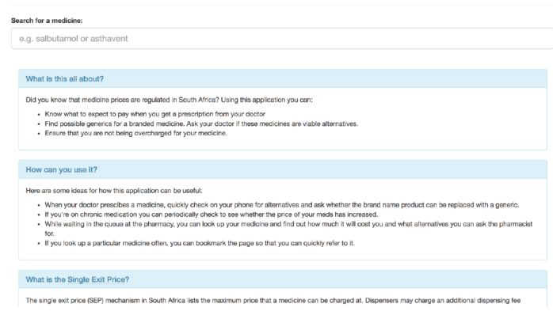
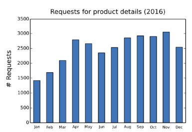
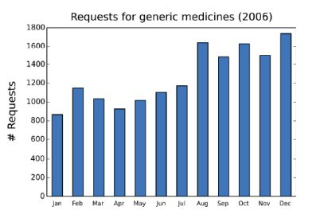

در سال ۲۰۱۴، کد آفریقای جنوبی، یک سازمان غیرانتفاعی مستقر در آفریقای جنوبی فعال در فضای دادهباز، مجموعه داده اندکی شناختهشده را از وبسایت وزارت بهداشت ملی دریافت کرد و برنامه کاربردی ثبت قیمت دارو (MPRApp , https://mpr.code4sa.org/) را ایجاد کرد، یک ابزار آنلاین که به بیماران اجازه میدهد قیمتهای دارو را مقایسه کنند.
MPRApp به بیماران اجازه میدهد تا هزینههای داروهای تجویز شده توسط پزشک را با داروهای دیگر (به عنوان مثال، عمومی) حاوی ترکیبات مشابه مقایسه کنند. همچنین به بیماران کمک میکند تا تایید کنند که داروخانهها بیش از حد از آنها استفاده نمیکنند و صرفهجویی در هزینه را هم برای بیماران و هم برای جامعه بدون به خطر انداختن کارآیی تضمین میکنند. در ابتدا انتظار میرفت که بیماران طبقه متوسط جامعه تا بالا با دسترسی آنلاین بهتر، ذینفعان اصلی MPRApp باشند. با این حال، شواهدی وجود دارد که پزشکان نیز از اطلاعات فراهمشده توسط MPRApp برای صرفهجویی در پول بیمارانشان استفاده میکنند. از آنجا که MPRApp در حال حاضر به زمان و مهارتهای توسعهدهنده خود برای اطمینان از به روزرسانیهای منظم وابسته است، استفاده مداوم و تاثیر آن نامشخص باقی میماند مگر اینکه بتوان تامین مالی پایدار را تضمین کرد. MPRApp که هیچ بازاریابی یا تبلیغاتی برای توصیف کردن ندارد، بر زندگی چند نفر از مردم افریقای جنوبی تاثیر گذاشتهاست. با یک مدل پایدار و افزایش آگاهی از MPRApp، به ویژه در میان واسطههای مورد اعتماد در بخش سلامت، میتواند دسترسی بیماران بیشتری را به داروهای ارزانتر فراهم کند.
پیشینه و زمینه
تمرکز بر مسئله / زمینه کشور
مراقبتهای بهداشتی در آفریقای جنوبی توسط بیمارستانها و کلینیکهای عمومی و پزشکان خصوصی ارائه میشود. پزشکان عمومی خصوصی (GPs)، با جراحیها در سراسر کشور، اولین انتخاب بسیاری از افراد طبقه متوسط آفریقای جنوبی هستند که به دنبال مشاوره پزشکی میباشند و میتوانند هزینههای مشاوره خصوصی را از ۲۰ تا ۵۰ دلار بپردازند. برای کسانی که توان مالی مراجعه به GPs را ندارند، تسهیلات پزشکی دولتی مانند کلینیکها و بیمارستانها تنها جایگزین را فراهم میکنند. بسیاری از افراد طبقه متوسط تا بالا در آفریقای جنوبی بیمه درمانی (یا کمکهای پزشکی که در آفریقای جنوبی شناخته شدهاست) برای پوشش هزینههای بستری خصوصی و / یا هزینههای پزشکی روزانه دریافت میکنند.
پزشکان دارو تجویز میکنند و داروخانهها دارو را توزیع میکنند. در مورد پزشکان خصوصی، پزشک داروی خاصی تجویز خواهد کرد و بیمار این دارو را از یک داروخانه خصوصی خریداری خواهد کرد. بیمار به انتخاب دارو دسترسی دارد، و به احتمال زیاد جایگزینهای برند شده و عمومی برای داروهای تجویز شده توسط پزشک وجود دارند. در برخی موارد، اگر پزشکان با جایگزینهای موجود برای یک داروی خاص ناآشنا باشند، ممکن است آن را به داروساز واگذار کنند تا یک جایگزین معادل برای بیمار فراهم کنند (و ممکن است از طریق نسخه درخواست این کار را بکنند). با این حال، امکان جایگزینی به در دسترس بودن دارو از شرکت داروسازی یا توزیعکننده، و این که آیا داروهای جایگزین توسط داروسازها ذخیره میشوند یا خیر، بستگی خواهد داشت. در مورد سیستم عمومی، اگر بیمار بخواهد داروی خود را از درمانگاه در یک بیمارستان عمومی به دست آورد، هیچ انتخاب محدودی برای بیمار وجود ندارد. بیمارستانهای عمومی تنها آن دسته از داروهایی را که از طریق سیستم تدارکات عمومی در دسترس آنها قرار میگیرند، ذخیره میکنند و معمولا تنها یک برند برای هر نوع دارو در نظر میگیرند.
قیمت دارو در آفریقای جنوبی توسط دولت تنظیم میشود، و داروهای عمومی که ارزانتر از داروهای با نام تجاری معادل آنها هستند توسط دولت تایید میشوند تا بیماران به جایگزینهای مقرونبهصرفهتر دسترسی داشته باشند. علاوه بر این، قانون معرفیشده در سال ۲۰۰۴ شرکتهای دارویی را از دادن تخفیف به مشتریان در بخش خصوصی منع میکند. آنها باید محصولات خود را به آنچه که به عنوان "قیمت خروجی واحد" (SEP) شناخته میشود، به همه خریداران بفروشند. وزارت بهداشت دولت ملی ملزم به انتشار اطلاعیه سالانه حداکثر افزایش قیمت مجاز است. به منظور شفافسازی قیمت داروها و مطابقت با مقررات مربوط به سیستم قیمتگذاری شفاف برای داروها و موارد زمانبندیشده، اداره بهداشت یک پایگاهداده SEP قابلدسترس عمومی را در وبسایت ثبت قیمت داروها منتشر میکند (http://www.mpr.gov.za/). چالشهای پزشکی
مشکل در بازار تنظیمشده دارو در افریقای جنوبی این است که پزشکان همیشه داروهای عمومی را تجویز نمیکنند، و اگرچه داروسازها براساس قانون موظف به ارائه داروهای عمومی با قیمت پایینتر به بیماران خصوصی هستند، این همیشه اتفاق نمیافتد. طبق مقالهای در سایت سلامت مشتری (Health24) در آفریقای جنوبی، تنها ۵۶ درصد از بیماران بخش سلامت خصوصی آفریقای جنوبی از داروهای عمومی استفاده میکنند در حالی که هنجار جهانی نزدیک به ۸۰ درصد است. تفاوتهای قیمت بین داروهای دارای برند و داروهای عمومی میتواند قابلتوجه باشد، و این امر به بیماران خصوصی فرصت بیشتری برای انتخاب جایگزینهای ارزانتر نسبت به کسانی میدهد که به دنبال درمان در بخش دولتی هستند. با توجه به مطالعه انجامشده توسط بنگالی و سلیمان، از ۳۴۶ داروی برند شده در نمونه مورد مطالعه، اختلاف هزینه میانه ۵۰.۴ درصد بود. ۷۵ درصد داروهای ژنریک مورد بررسی بیش از ۴۰ درصد ارزانتر از نسخه برنددار بودند. با اینکه بیماران عمومی با بزرگترین مشکلات مواجه هستند (از آنجایی که حق انتخاب دارو را ندارند)، بیماران پزشکان خصوصی نیز از این تفاوت قیمت رنج میبرند، زیرا آنها فاقد دسترسی به اطلاعاتی هستند که به آنها اجازه شناسایی و خرید جایگزینهای مقرونبهصرفهتر را برای داروهای تجویز شده میدهد.
همانطور که در متن اشاره شد، داده قیمت دارو در واقع توسط وزارت بهداشت (DoH) منتشر شده و به صورت آنلاین در دسترس است. با این حال، پیدا کردن اطلاعات دشوار است و نیاز به مهارتهای فنی و برخی از دانش تخصصی برای استفاده دارد.
فعالان اصلی
ارائهکننده(های) دادههای کلیدی
دولت ملی آفریقای جنوبی، از طریق وزارت بهداشت (DoH)، در دهه گذشته قیمتهای دارو را تنظیم کردهاست، و طبق قانون ملزم است که قیمت دارو را شفاف سازد. وزارت بهداشت این کار را با انتشار دادههای قیمت دارو در سایت ثبت قیمت دارو انجام میدهد. بنابراین، وزارت دفاع، تامینکننده اصلی دادههای قیمت دارو است. همچنین باید از وزیر بهداشت، آرون متسوالدی، که داروهای مقرونبهصرفهای را پشتیبانی کرده و تا کنون با شرکتهای داروسازی چند ملیتی فعال در آفریقای جنوبی در تلاش برای بهبود دسترسی به داروها از طریق استفاده از داروهای مقرونبهصرفه برخورد کردهاست، یاد کرد.
منابع اصلی دادهها، شرکتهای داروسازی خصوصی و دارای مجوز هستند که طبق قانون ملزم به ارائه قیمت دارو به صورت سالانه به وزارت بهداشت میباشند.
کاربران و واسطههای دادههای کلیدی
نقشآفرین اصلی در استفاده مجدد از داده حاکمیتی باز، کد آفریقای جنوبی است (Code4SA، http://di4sa.org). Code4SA یک سازمان غیرانتفاعی در Cape Town آفریقای جنوبی میباشد. Code4SA با دولتها (ملی، منطقهای و شهری)، سازمانهای جامعه مدنی، رسانهها و جامعه فنآوری برای ترویج انتشار، استفاده و تاثیر داده حاکمیتی باز در آفریقای جنوبی کار میکند. Adi Eyal، مدیر Code4SA، محرک اصلی توسعه MRPApp بود.
دیگر واسطههای دادهها شامل پزشکان خصوصی هستند که ممکن است به MRPApp تکیه کنند تا به بیماران خصوصی در مورد داروهای جایگزین و قیمتهای بهتر مشاوره دهند. علاوه بر این، داروخانههای خصوصی هم به عنوان کاربران داده و هم واسطه عمل میکنند چون ممکن است بخواهند خود را با معادلهای عمومی داروهای تجویز شده آشنا کنند تا جایگزینهای عمومی را فراهم کنند که از نظر قانونی ملزم به ارائه به بیماران هستند. همچنین قابلتصور است که روزنامهنگاران، سازمانهای جامعه مدنی یا سازمانهای ناظر مصرفکننده ممکن است به استفاده از MRPApp علاقهمند باشند تا به قیمتهای دارو توجه کنند و از دولت بخواهند تا در صورت بروز اختلاف در قیمتهای ذکر شده به صورت آنلاین و آنهایی که در واقع در دسترس بیماران قرار میگیرند، آنها را در نظر بگیرد.
شرکتهای خصوصی که خدمات مشاوره پزشکی رایگان ارائه میدهند (مانند وبسایتها)، MRPApp را به عنوان یک ابزار مفید برای جذب بیماران به خدمات خود در نظر میگیرند. به همین ترتیب، ارائهدهندگان کمکهای پزشکی خصوصی میتوانند MRPApp را به عنوان یک سرویس ارزشافزوده در محصولات خود در نظر بگیرند.
ذینفعان کلیدی
بیماران در بخش مراقبتهای بهداشتی خصوصی آفریقای جنوبی ذینفعان اصلی اطلاعات موجود در مورد قیمت دارو هستند. آنها قادر به تغییر تصمیماتشان در مورد خرید داروها براساس اطلاعات ارائهشده توسط MRPApp هستند. چنین تصمیمات حساس به قیمتی همچنین ممکن است منجر به کارایی عمومی در بخش بهداشت و درمان شود، که به طور کلی به سود اقتصاد آفریقای جنوبی خواهد بود.
شرح پروژه
آغاز فعالیت دادهباز
در سال ۲۰۱۴، ادی ایال، مدیر کد افریقای جنوبی، یکی از بزرگترین ابتکارات روزنامهنگاری داده و فنآوری شهری آفریقا، به این فکر افتاد که آیا راه بهتری برای در دسترس قرار دادن اطلاعات مربوط به قیمت دارو در افریقای جنوبی وجود دارد یا خیر. او بر این باور بود که اگر اطلاعات مربوط به قیمت دارو بیشتر در دسترس باشد و درک آن آسانتر باشد، میتواند در هزینه بیماران خصوصی صرفهجویی کند. او خیلی زود متوجه شد که میتواند یک برنامه ساده را با استفاده از مجموعه داده محدودتر شناختهشده از وبسایت وزارت بهداشت توسعه دهد که به حل مشکل پیش روی او و میلیونها بیمار آفریقای جنوبی کمک کند. این مجموعه داده ثبت قیمت دارو بود (که در زیر توضیح داده شد) و شامل داده قیمت خروجی بود - قیمت دولتی همه داروهای موجود در بخش سلامت خصوصی آفریقای جنوبی. هدف استفاده از این مجموعه داده برای ارائه اطلاعات به بیماران به شکلی آسان بود که به آنها اجازه شناسایی و درخواست داروهای معادل و اطمینان از اینکه داروخانهها بیش از حد از آنها استفاده نمیکنند را بدهد.
ایال خود تعدادی دارو برای بیماریهای مزمن خود مصرف میکند. در یک پست وبلاگ، او توضیح میدهد که چگونه برنامه کاربردی که ایجاد کردهاست، به نفع شخص او بودهاست و چگونه جستجوی یک راهحل فردی و شخصی منجر به یک راهحل بالقوه برای جامعه به طور کلی شدهاست:
این یک مثال واقعی از این است که چگونه این برنامه کاربردی به من سود رساندهاست. من داروهای مزمن A و B را مصرف میکنم. نسخه برند شده A، مقدار R741.27 هزینه دارد. نوع عمومی A در R420.22 موجود است. نه تنها به خاطر این کار، بلکه کمک پزشکی من آن را کامل میکند در حالی که آنها فقط محدوده R420.00 را پوشش میدهند. من فقط با استفاده از این برنامه یاد گرفتم."
تقاضا و عرضه نوع داده(ها) و منابع
منبع داده اولیه مورداستفاده برای برنامه ثبت قیمت دارو (MPRApp, https://mpr.code4sa.org/)، پایگاهداده قیمتهای دارو (ثبت قیمت دارو) است که توسط وزارت بهداشت دولت آفریقای جنوبی منتشر شدهاست. این پایگاهداده شامل قیمتها، جزئیات محصول (مثلا برنامه و فرم)، ترکیبات و دوز در دسترس همه داروهای تایید شده دولت در افریقای جنوبی است. این پایگاهداده هرساله پس از انتشار قیمت واحد داروهای مورد نیاز قانون منتشر میشود. به روزرسانیهای گاه به گاه توسط اداره در طول سال برای اصلاح خطاها یا ایجاد تنظیمات پیشبینینشده انجام میشود. یک منبع RSS در دسترس است تا طرفین علاقهمند را از به روزرسانیها و تغییرات ایجاد شده در پایگاهداده مطلع سازد. این پایگاهداده همچنین برای دانلود در قالب مایکروسافت اکسل از وب سایت ثبت قیمت دارو در دسترس است.

اگرچه داده موجود در سایت از نظر تئوری "باز" است، کاربران باید از میان چندین حلقه برای استفاده از آن بپرند. در اینجا برخی از مراحلی که یک کاربر معمولی باید به منظور مقایسه قیمتهای دارو انجام دهد، آورده شدهاست:
۱. وب سایت Medicine PriceRegistry را بشناسید و آن را پیدا کنید
۲. صفحه http://www.mpr.gov.za/PublishedDocuments.aspx # DocCatId = ۲۱ را از صفحه اصلی با کلیک بر روی "SEP Databases" در منوی "Frequently Used Links" پیدا کنید.
۳. آخرین پایگاهداده قیمت تکخروجی، صفحه گسترده مایکروسافت اکسل ۴۰ مگابایتی را دانلود کنید.
۴. صفحه گسترده بزرگی را باز کنید که شامل ۱۴۷۲۸ ردیف دارو و ۲۲ ستون دادههای توصیفی برای هر داروی فهرستشده است.
۵. به دنبال داروهای مربوطه بگردید.
۶. برای یافتن داروهای عمومی، تمام جایگزینهای با قدرت متفاوت (مثلا ۲۰۰ میلیگرم یا ۴۰۰ میلیگرم) و شکل دارویی (مثل قرص یا سوسپانسیون) را بررسی کرده و کنار بگذارید.
۷. برای محاسبه مقدار بیش از قیمت مخالف، هزینههای دارویی (که در صفحه گسترده ارائه نشده است) را به قیمت خروجی واحد (که در صفحه گسترده ارائه شدهاست) اضافه کنید.
نیازی به گفتن نیست که این فرآیند پیچیده، دشوار و فراتر از تواناییهای اکثر بیماران است. نوآوری Code4SA ساده کردن فرآیند برای کاربر نهایی برای تعیین ارزانترین جایگزین برای داروی تجویز شده بود.
برنامه Code4SA شامل یک صفحه است که برخی از اطلاعات زمینهای و آموزشی را فراهم میکند و یک نوار جستجو به کاربران اجازه میدهد تا به دنبال داروهای خاص یا ترکیبات فعال بگردند. نتایج بازگردانده شده شامل محصولات و / یا ترکیبات مشابه هستند. یک آیکون نیز نمایش داده میشود که شکل دارو (قرص، سوسپانسیون و غیره) را نشان میدهد. برای هر محصول منطبق، اطلاعات زیر ارائه میشود: حداکثر قیمت، زمانبندی، شکل دوز، تعداد قرصها / مقدار / دوز بستهها، قیمت معمول / نوآور، و فهرستی از ترکیبات فعال (نام و مقدار). کاربران میتوانند برای هر نتیجه روی یک لینک با برچسب "یافتن برند" کلیک کنند.
دادههای برنامه کاربردی به صورت غیر همزمان به روز رسانی میشوند. این فرآیند شامل دانلود هر گونه بهروزرسانی دادهها توسط مدیر Code4SA، تفکیک دادهها و وارد کردن دادههای بهروز و تفکیک شده به پایگاهداده برنامه کاربردی است.
بودجه
هیچ بودجه خارجی برای این اقدامات مرتبط با دادههای باز در دسترس نبود، و هیچ قصدی برای تولید درآمد از MPRApp به منظور پوشش توسعه یا عملیات آن وجود ندارد. توسعه برنامه کاربردی در درجه اول توسط ورودیهای غیرمادی به طور خاص، روحیه کارآفرینی توسعهدهندگان، زمان، انرژی و مهارتهای فنی امکانپذیر شد. زیرساخت سازمانی موجود Code4SA برای استقرار و پشتیبانی از برنامه کاربردی نیز به توسعه آن کمک کردهاست.
استفاده از منابع دادهباز
در ابتدا، توسعهدهندگان MPRApp پیشبینی کردند که این برنامه در درجه اول توسط بیماران، و احتمالا تا حد محدودی توسط توسعهدهندگان دیگر که ممکن است دادهها را به دیگر برنامههای ارزیابی سلامت شخصی یا پلتفرمها وارد کنند، مورد استفاده قرار خواهد گرفت. نه Eyal و نه Code4SA کار زیادی برای تبلیغ یا بازاریابی برنامه انجام ندادند، و به نظر میرسید که جذب و نظارت اولیه کند باشد، همانطور که توسعهدهندگان از دچار مشکل شدن وبسایت میزبان برنامه در اواسط ۲۰۱۴ بیاطلاع بودند. همانطور که مشخص شد، عدم دسترسی به برنامه کاربردی به صورت غیرعمد، شواهدی از استفاده از برنامه کاربردی را فراهم میکند. این شواهد به شکل یک ایمیل ارسالی به Code4SA بود، که در آن زمان که وبسایت باز میگردد پرس و جو میشود، و سودمندی برنامه کاربردی برای فرستنده را نشان میدهد:
" این ناراحتکننده است که وبسایت ثبت قیمت دارو شما دیگر کار نمیکند. این سایت یک ابزار قدرتمند در زمینه پزشکی من بود، واقعا به من کمک کرد تا درمانهایی را که بیمارانم توان مالی آن را داشتند، انجام دهم. من میخواهم بدانم که آیا این وبسایت به این زودی به اینترنت باز خواهد گشت یا نه. در آخر از زحمات شما بسیار سپاسگزارم."
من در یک محله با درآمد متفاوت کار میکنم و میتوانم بفهمم که بودجه بیمارانم چقدر است - هیچ فایدهای در تجویز دارو که بیمار نمیتواند از عهده خرید آن برآید، وجود ندارد. لطفا کار صحیح را ادامه دهید."
ایمیلها یک مورد استفاده غیرمنتظره برای MPRApp را نشان دادند. در حالی که این برنامه کاربردی در درجه اول با در نظر گرفتن بیماران به عنوان کاربران نهایی ایجاد شده بود، و در حالی که خود خالق MPRApp توانست از این برنامه به عنوان یک بیمار بهره ببرد، در بسیاری از موارد، این بیماران نبودند که مستقیما به برنامه کاربردی دسترسی داشتند، بلکه پزشکان بودند. این دستاندرکاران به عنوان واسطههای قابلاعتماد و متخصص برای بیمارانی عمل میکردند که قادر به درک و بهره بردن از اطلاعات موجود در برنامه بدون راهنمایی نبودند. در واقع، وضعیت تا حدی پیچیدهتر بود: مشخص شد که پزشکی که به ایال ایمیل میزد، این برنامه کاربردی را مستقیما کشف نکرده بود، بلکه از طریق یکی از بیمارانش کشف کرده بود. همه اینها نه تنها نقش مهم واسطهها (به عنوان مثال، پزشکان یا داروسازان) در انتشار و استفاده از چنین کاربردهایی را نشان میدهند، بلکه نقش همزیستی واسطهها با کاربران نهایی (به عنوان مثال، بیماران) را نیز نشان میدهند. با هم، واسطهها و کاربران نهایی قادر به به حداکثر رساندن پتانسیل داده باز هستند.
تاثیر
سنجش تاثیر اغلب دشوار است، به خصوص که بسیاری از پروژههای موجود در این مجموعه از مطالعات موردی به تازگی آغاز شدهاند. تاثیر بیشتر و سیستماتیک دادهباز سالها طول میکشد تا آشکار شود و در بیشتر کشورها کار زیادی در حال انجام است. بااینحال، چند شکل اولیه تاثیر از پروژه MPRApp را میتوان شناسایی کرد.
شاخصهای استفاده
تجزیه و تحلیل بالا به شدت متکی بر وبلاگهای نوشته شده توسط ایال و تبادل ایمیل بین ایال و پزشک دریافتکننده به عنوان مدرک استفاده است. واقعیت این است که بسیاری از اقدامات دادهباز در مقیاس کوچک، زمان یا منابعی برای ارزیابی استفاده و تاثیر محصولات خود ندارند. در واقع، اگر وبسایت MPRApp از بین نرفته بود، کد افریقای جنوبی هرگز نمیتوانست بفهمد که محصول آنها در واقع در حال استفاده است.
ایال فقدان منابع برای اثبات اینکه چه کسی از MPRApp استفاده میکند و برای چه چیزی ممکن است از آن استفاده کنند را تایید کرد. آنچه او میتوانست فراهم کند تجزیه و تحلیل وب سایت بود که نشان میداد تقریبا ۲۰۰۰ بازدیدکننده منحصر به فرد در ماه به این برنامه دسترسی دارند. بیشتر این بازدیدکنندگان تکرارشونده هستند. علاوه بر این، کد آفریقای جنوبی نیز درخواستهای منظمی را برای بهروزرسانی دادههای برنامه زمانی که دیگر با آخرین دادههای دولتی در دسترس هماهنگ نیست، دریافت میکند. همه این موارد نشان میدهد که این برنامه کاربردی در حال استفاده است و کاربران از آن بهره میبرند. شکلهای ۲ و ۳ را برای تحلیلهای وب بیشتر در سال ۲۰۱۶ ببینید که شواهدی از استفاده مکرر و فزاینده از MPRApp برای پرسوجوی قیمت داروها (شکل ۲) و جایگزینهای عمومی (شکل ۳) ارائه میدهد. همچنین شواهدی وجود دارد که MPRApp API توسط دیگر واسطهها برای دسترسی به داده قیمت دارو در تلاشهایشان برای دسترسی و مشارکت بیماران استفاده میشود (برای مثال، اخبار HEALTH - E، یک وبسایت خبری سلامت آفریقای جنوبی محبوب را ببینید).


تغییر برآیندها
مشکل اصلی که مورد بررسی قرار میگیرد عدم دسترسی به اطلاعات قابلاستفاده در مورد قیمت داروها است که منجر به این میشود که بیماران خصوصی نتوانند تصمیمات خرید آگاهانه در رابطه با داروهای تجویزشده بگیرند. روشهای مختلفی برای اندازهگیری تاثیر وجود دارد. شاخصهای کلیدی آنهایی هستند که شواهدی از تغییر را فراهم میکنند که مستقیما به ایجاد MPRApp نسبت داده میشوند. اندازهگیری تغییر در یک سطح کلان و نسبت دادن یک ارتباط علی بین معرفی یک بخش جدید از فنآوری و تغییر مشاهدهشده، بااینحال، ضعیف است. توضیح ارتباطات علی در سطح خرد بسیار امکانپذیر است (اگرچه بدون چالش نیست). شواهد تاثیر در سطح خرد در این مورد، برای مثال، میتواند به شکل بیماران خصوصی یا دیگر شهروندانی باشد که رفتار خود را در رابطه با تجویز و / یا خرید داروها در افریقای جنوبی تغییر میدهند.
پیامدها و تاثیرات
استفاده نشان دادهشده
از شواهد موجود، واضح است که در دسترس بودن اطلاعات جدید در مورد قیمتگذاری دارو، که از داده حاکمیتی باز استخراج شدهاست، نحوه تصمیمگیری برخی از بیماران (در این مورد، توسط نماینده) در رابطه با خرید دارو را تغییر دادهاست.
این امکان وجود ندارد که ادعا کنیم بیماران سالمتر هستند، و حتی اگر شواهد اضافی نشان دهند که یک جامعه خاص یا گروهی از بیماران مرتبط با یک پزشک با استفاده از برنامه کاربردی در واقع سالمتر هستند، باز هم ترسیم یک رابطه علی بین تصمیمگیری بهتر و شهروندان سالمتر مشکلساز خواهد بود.
همچنین شواهدی در قالب تحلیلهای وب از همان افرادی که از MPRApp استفاده مکرر میکنند، وجود دارد. در حالی که نمیتوان با قطعیت گفت که ارزش یا مزایای حاصل از استفاده از MPRApp چیست، میتوان با درجهای از قطعیت گفت که استفاده مکرر و نیاز به دادههای به روز نشاندهنده نوعی تاثیر مثبت است که کاربران تجربه میکنند.
تصدیق میشود که تاثیر براساس تعداد بسیار محدودی از موارد و دادههای تحلیل وب سطحی ادعا میشود. انجام یک نظرسنجی در مقیاس بزرگ درباره آگاهی، استفاده و تاثیر MPRApp خارج از حوزه این تحقیق است. مصاحبهها با دو پزشک که هم در بخش دولتی و هم در بخش خصوصی کار میکنند تا درک بهتری از بازار دارو و فرآیند تجویز دارو به دست آورند، انجام شد. بااینحال، هر دوی آنها نشان دادند که هیچکدام از آنها درباره MPRApp اطلاعی نداشتند، هرچند هردوی آنها ارزش آن را برای بیماران خصوصی تایید کردند. در حالی که فقدان منابع متعدد حامی ادعاهای استفاده و / یا تاثیر ناامیدکننده است، این نباید به عنوان محدودکننده بیش از حد دیده شود. گستره شواهد نسبت به شواهد محکم، کمتر یک مسئله است. علاوه بر این، با فرض این که تعداد مشخصی از کاربران نشاندهنده استفاده یا تاثیر واقعی هستند، میتواند بسیار مشکلساز باشد. همانطور که در این مطالعه موردی نشانداده شدهاست، یک کاربر واسطه ممکن است به دهها یا صدها ذینفع برسد که در تجزیه و تحلیل کاربرد نشان داده نمیشوند. این ممکن است به طور خاص مرتبط باشد.
ریسکها
همانطور که مثال MPRApp و دیگر مطالعات موردی مختلف در این مجموعه نشان میدهد، داده باز پتانسیل عظیمی برای تحول مثبت دارد. اما همانطور که در سراسر این مجموعه میبینیم، دادهی باز ریسکهای خاصی را نیز تحمیل میکند. مهم است که این ریسکها را درک کنیم تا اطمینان حاصل کنیم که پروژههای دادهباز به صورت ایمن و به روشی اجرا میشوند که تاثیرات بالقوه را به حداکثر رسانده و بازهها را محدود میکنند.
برای این مطالعه موردی با دو پزشک مصاحبه شد تا ریسکهای موجود در MPRApp را ارزیابی کنند. آنها دو مسئله گسترده را مطرح کردند. اولین مورد مربوط به دقت اطلاعات موجود در برنامه کاربردی بود. برای مثال، یکی از پزشکان پیشنهاد کرد که MPRApp باید برای کاربران روشن کند که چه زمانی داروهای جایگزین پیشنهاد شده در نتایج جستجو، دقیقا حاوی همان مواد موثره داروهای مورد پرس و جو نیستند. برای مثال، جستجو برای "ساندوز آتنولول ۵۰" (که تنها ترکیب فعال آن آدول است) فهرستی از ۱۲ داروی جایگزین فراهم میکند، که دو عدد از آنها حاوی ترکیبات فعال اضافی هستند (یکی حاوی هیدروکلروتیازید و دیگری حاوی کلروتالیدون است). چنین تطابق ناقصی چندین ریسک بالقوه، از جمله احتمال واکنشهای مضر یا ناکارآمدی پزشکی را مطرح میکند. مثالهای مشابهی زمانی یافت شد که Code4SA آزمایش زنده برنامه کاربردی را پیش از راهاندازی در مقیاس کامل با پزشکان انجام داد.
علاوه بر این، پزشکانی که با آنها مصاحبه شد در مورد جامعیت دادههای ارائهشده پرسوجو کردند. برای مثال، آنها اظهار داشتند که از داروهای جایگزین (و گاهیاوقات ارزانتر) که در واقع در لیست MPRApp قرار نداشتند، آگاه بودند. دلایل این شکافها در اطلاعات نامشخص است، اما تعدادی از عوامل میتوانند نقش داشته باشند: اشتباهات در دادههای منبع ارائهشده توسط دولت، دادههای قدیمی، یا سردرگمی که به دلیل مکانیسمهای خرید مختلف در سراسر جنبههای مختلف بخش سلامت افریقای جنوبی ایجاد شدهاست. صرفنظر از دلایل، اگر پایگاهداده با دانش موجود و در دسترس بودن داروها مطابقت نداشته باشد، میتواند منجر به صرفهجویی کمتر از حد مطلوب در هزینه شود و به طور کلی اعتمادی که پزشکان به برنامه کاربردی دارند را به خطر بیاندازد.
درسهای آموخته شده
درحالیکه تعریف این تاثیر، فراتر از روایتهای داستانگونه کاربرد، در مورد MPRApp دشوار است، این پروژه برخی درسهای کلیدی در رابطه با شرایط توانمندسازی و موانع ایجاد اقدامات موفق دادهباز در اقتصادهای درحالتوسعه را مطرح کرد.
توانمندسازها
سیاست و چارچوب قانونگذاری
یک توانمندساز اصلی برای اقدامات مرتبط با دادههای باز MPRApp، چارچوب قانونی آفریقای جنوبی بود که شفافیت در قیمتگذاری دارو را ترویج داده و اعمال میکند. وجود چنین چارچوبی وزارت بهداشت را مجبور میکند تا دادههای مربوط به قیمت داروها را در افریقای جنوبی جمعآوری و منتشر کند.
با این حال، سیاست درست یا چارچوب قانونی به خودی خود برای فعال کردن برنامهای مانند این کافی نیست. به عنوان مثال، ادارات دولتی ممکن است دادهها را مطابق با قوانین موجود جمعآوری کنند، اما نمیتوانند دادهها را به شیوهای یا فرمتی منتشر کنند که دسترسی یا استفاده مجدد را ممکن میسازد (علیرغم اینکه چنین رویکردی در چارچوب سیاست مورد نیاز است). در این مورد خاص، بخش موردنظر با مقررات مطابقت دارد و دادههای به موقع و کامل مربوط به قیمتگذاری دارو را در قالب قابل خواندن توسط ماشین منتشر میکند، که به یک توسعهدهنده اجازه میدهد تا دادهها را مجددا به اطلاعات مفید تبدیل کند.
موانع
فقدان بودجه مانع مهمی در گسترش تاثیر MPRApp بود، اگرچه مشخص بود که پزشکان (و نه تنها بیماران) از این برنامه استفاده میکردند. کمبود بودجه برای توسعه و ایجاد آگاهی، جذب و تاثیر احتمالی MPRApp را محدود کرد. به گفته ایال، دولت به مدیریت MPRApp علاقهمند بود اما فقدان آشکار ظرفیت در سطح دولت برای انجام این کار به این معنی است که پایداری برنامه کاربردی در معرض خطر باقی میماند.
دسترسی محدود
مانع دیگر ریشه در این واقعیت دارد که MPRApp دسترسی محدود دارد - تنها به نفع بیمارانی است که داروها را از داروخانههای خصوصی میخرند، در حالی که کسانی که در حوزه بهداشت عمومی هستند به طور مشابه داروهای جایگزین برای خرید ارائه نمیکنند. شکاف بین بخش سلامت خصوصی و دولتی، که هر دو توسط دولت تنظیم میشوند، مانعی برای کاربرد گستردهتر، استفاده و تاثیر MPRApp برای بیماران خارج از بخش سلامت خصوصی است. به طور کلی، از آنجا که کسانی که در بخش خصوصی هستند به طور کلی تمایل به بهتر شدن دارند، دسترسی محدود به کاربرد - به خصوص اگر به طور گستردهتر مورد استفاده قرار گیرد - میتواند نابرابریهای اجتماعی - اقتصادی موجود را تقویت کند و منجر به یک شکاف دیجیتالی کاملا آشنا شود.
مشکلات دادهها
دادههای منتشر شده توسط وزارت بهداشت قابل تعامل نیستند، به این معنی که نمیتوانند به راحتی با دیگر منابع داده ترکیب شوند یا با ابزارهای موجود پردازش شوند. این امر باعث محدود شدن سودمندی MRPApp شده و اعتماد کاربران به برنامه را به خطر میاندازد. در حال حاضر، دادههای برنامه تنها زمانی بهروزرسانی میشوند که توسعهدهنده زمان انجام این کار را داشته باشد یا درخواستهای مداوم کاربران برای دادههای بهروزرسانی شده دریافت شود. بهروزرسانی خودکار دادههای برنامه کاربردی ممکن شده توسط دادههای دولتی که سازگار هستند به کاهش این مانع کمک خواهد کرد.
نگاهی به مسائل پیش رو
وضعیت فعلی
برنامه کاربردی هنوز فعال است و مدیر Code4SA دادهها را به صورت و در زمان مجاز بهروزرسانی میکند. این بهروزرسانیها اغلب توسط کاربران MPRApp انجام میشوند، و براساس یک برنامه منظم انجام نمیشوند.
پایداری
جریان دادهها و اطلاعات از دولت به احتمال زیاد ادامه خواهد یافت، اما پایداری این برنامه کاربردی به خودی خود زیر سوال میرود. حداقل دو دلیل برای این موضوع وجود دارد: (۱) برنامه کاربردی متکی بر زیرساخت یک سازمان است که خود به تامین مالی اهداکننده برای عملکرد آن وابسته است؛ و (۲) کاربرد به سخاوت یک فرد بستگی دارد - یعنی، ادی ایال برای تخصیص زمان و انرژی به کاربرد و حفظ دادههای آن. با این حال، طبق گفته ایال، وزارت بهداشت حامی است، و نشانههایی وجود دارد که ممکن است علاقهمند به مدیریت MPRApp باشد. تا به امروز، این علاقه به اقدام واقعی تبدیل نشده است.
تکرارپذیری
اقدام مرتبط با دادههای باز در سایر کشورها، ایالتها یا استانهایی قابل تکرار است که در آنها دولتهای ملی یا فراملی داده مربوط به قیمتگذاری دارو را در دسترس قرار میدهند، که در آن قیمتگذاری متفاوتی برای داروهای مشابه وجود دارد و بیماران در رابطه با برند دارو حق انتخاب دارند. در جایی که دولت داده قیمت دارو را جمعآوری نمیکند، قابلتصور است که داده را بتوان از طریق جمعسپاری یا حتی مستقیما از شرکتهای دارویی جمعآوری کرد، اگرچه یک انگیزه واضح (به احتمال زیاد مالی) باید برای شروع و حفظ جمعآوری داده وجود داشته باشد.
اقدامات مرتبط با دادههای باز ممکن است در سایر بخشها نیز قابل تکرار باشد زمانی که دولتها قیمت کالاها و مواد مصرفی را تنظیم میکنند. بااینحال، هیچ شواهد مستقیمی وجود ندارد که MPRApp تا به امروز به هر طریقی تکرار شده باشد.
نتیجهگیری
نکات زیر ارزش ایجاد دارند از نظر اینکه چگونه این مطالعه موردی خاص میتواند یک نظریه جهانی تغییر را در مورد تاثیر داده باز در کشورهای در حال توسعه اطلاعرسانی کند:
۱. ترکیبی از عوامل و شرایط لازم است تا یک اقدام داده باز تاثیرگذار باشد. در این مورد، این یک ترکیب از موارد زیر بود: یک مشکل دنیای واقعی واضح؛ یک فرد کنجکاو و متعهد با مهارتهای فنی و وجدان اجتماعی؛ یک منبع دادهباز مرتبط، منظم و قابلاعتماد؛ یک عامل خوششانسی که امکان کشف برنامه کاربردی را بدون هیچ گونه تلاش بازاریابی فراهم میکرد. و، در آخر اما نه حداقل، سودمندی واقعی برای کاربرانی که ارزش را در دادهها یافتند (و، در این مورد، زمانی که برنامه کاربردی پایین رفت با سازمان دهندگان تماس گرفت).
۲. داده حاکمیتی باز مرتبط، منظم و قابلاعتماد نیازمند تلاش و منابع است. وجود مقررات مربوط به شفافیت در تضمین انتشار دادهباز توسط ادارات دولتی حیاتی است. همچنین باید توجه داشت که مقررات در غیاب مطاوعت یک شرط ناکافی است. چیزی که مورد نیاز است، چارچوب قانونی صحیح است که با فرهنگ انطباق ترکیب میشود (یا ابزارهایی برای اطمینان از انطباق).
۳. ذینفعان نهایی یک اقدام دادهباز ممکن است لزوما بهترین گروه هدف از نظر بازاریابی و ترویج استفاده از برنامه نباشند. واسطههای معتمد که تخصص اضافی دارند و به ذینفعان دسترسی دارند، ممکن است مکان بهتری برای شروع باشند. این امر به ویژه در مورد دادههایی صدق میکند که ممکن است نیاز به تخصص خاصی برای استفاده و ایجاد مفهوم داشته باشند.
۴. همه پروژههای داده باز نیاز به سرمایهگذاری برای شروع ندارند. با این حال، تامین مالی خارجی به گسترش مزایای برنامههای کاربردی داده باز کمک میکند و به طور خاص آنها را پایدار میسازد و آنها را قادر میسازد تا در طول زمان رشد کنند.
مراجع
منابع اولیه
مصاحبه با دکتر J. Cunnigham، ۱۲ اوت ۲۰۱۶. Cape Town
آدی ایال، "چقدر باید برای داروهای خود بپردازید؟" کد برای آفریقای جنوبی، اکتبر 2013http://code4sa.org/2013/10/15/comparing-medicine-prices.html.
Adi Eyal، "Open Data FTW!" کد برای آفریقای جنوبی، آوریل ۲۰۱۴، http://code4sa.org/2014/04/25/generic-medicines-ftw.html.
Adi Eyal، "داروهای ارزانتر - یک استفاده غیرمنتظره، سپتامبر ۲۰۱۴، کد برای آفریقای جنوبی، http://code4sa.org/2014/09/22/cheaper-medicines-unexpected-user.html.
مصاحبه با Adi Eyal، ۲ آگوست ۲۰۱۶. کدبریج، Cape Town
Health-E News ثبت قیمت داروها " https://www.health-e.org.za/medicine-price-registry/.
مصاحبه ایمیلی با دکتر آر. هنری، ۱۰ اوت ۲۰۱۶.
پیوست ۱
ارزیابی باز بودن دادهها
معیارهای داده های باز ODDC
بله / خیر
آیا داده وجود دارد؟
بله
آیا به صورت دیجیتالی آنلاین در دسترس است؟
آیا دستگاه داده قابل خواندن است؟
آیا داده ها به صورت انبوه در دسترس هستند؟
آیا مجموعه داده به صورت رایگان در دسترس است؟
آیا داده ها به طور آشکار مجوز دارند؟
خیر
آیا مجموعه داده به روز است؟
آیا انتشار مجموعه داده پایدار است؟
آیا یافتن اطلاعات روی مجموعه داده آسان بود؟
آیا URI داده های پیوندی ارائه شده است؟
نمره کل
معیارهای داده های دولت باز
داده ها باید کامل باشند
داده ها باید اولیه باشند
داده ها باید به موقع باشد
داده ها باید در دسترس باشند
دسترسی باید بدون تبعیض باشد
داده ها باید ماشینی قابل پردازش باشند
داده ها باید بدون مجوز باشند
پیوست ۲
مصاحبه با پزشکان
سوالات ارسالی:
من در حال انجام یک پروژه تحقیقاتی کوچک با بنیاد وب و GovLab برای USAID در مورد تأثیر داده های باز در کشورهای در حال توسعه هستم و نمیدانم که آیا شما وقت دارید به چند سوال پاسخ دهید که به من کمک میکند؟ در اصل، من میخواهم بدانم:
آیا قبلاً با این وبسایت برخورد کرده اید؟ https://mpr.code4sa.org/
آیا این وبسایت برای شما به عنوان یک پزشک ارزشی دارد یا خیر، و محدودیتها یا مشکلات احتمالی وبسایت (از نظر پزشکی) چیست؟